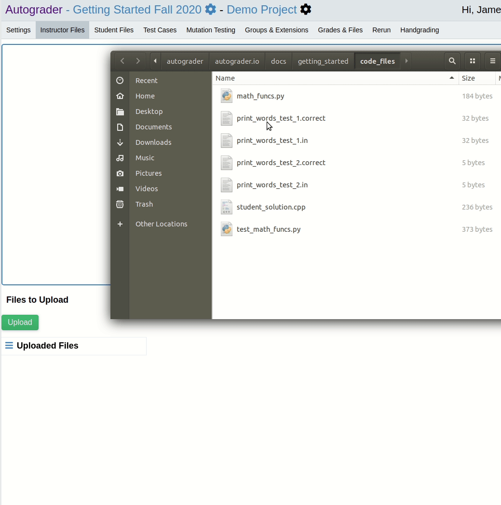

Adding Test Cases to Your Project¶
For example purposes, we’ll be using files with names and contents as listed below. Please create copies of these files on your local machine as you follow this guide. The files can also be found on GitHub.
IMPORTANT: The .correct files below should end with a blank line.
test_math_funcs.py¶
import unittest
import math_funcs
class MathFuncTestCase(unittest.TestCase):
def test_add(self):
self.assertEqual(11, math_funcs.add(8, 3))
def test_subtract(self):
self.assertEqual(-3, math_funcs.subtract(5, 8))
def test_multiply(self):
self.assertEqual(42, math_funcs.multiply(7, 6))
if __name__ == '__main__':
unittest.main()
math_funcs.py¶
def add(first, second):
return first + second
def subtract(first, second):
# Intentional bug
return second - first
def multiply(first, second):
return first * second
print_words_test_1.in¶
some words that will be printed
print_words_test_1.correct¶
some
words
that
will
be
printed
print_words_test_2.in¶
word
print_words_test_2.correct¶
word
student_solution.cpp¶
#include <iostream>
#include <string>
using namespace std;
int main() {
// Intentional bug when input only has one word
string word;
cin >> word;
while (cin) {
cout << word << endl;
cin >> word;
}
}
Upload Instructor Test Case Files¶
In the project admin page, click on the “Instructor Files Tab” and then upload the files test_math_funcs.py, print_words_test_1.in, print_words_test_1.correct, print_words_test_2.in, print_words_test_2.correct from the previous section.
